오늘의 여정 100분
1차시엔 윈도우 앱, 2차시엔 배포와 웹앱. 코드를 직접 쓰지 않고 '말로' 만듭니다.
오늘 만들 앱 4개 — 모두 '말'로 만듭니다
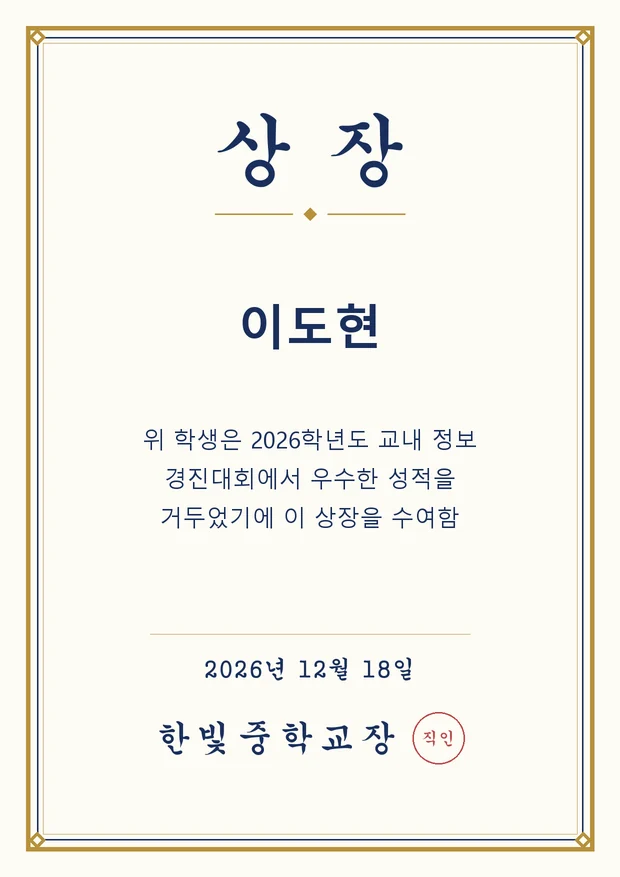
상장·수료증 일괄 생성기
엑셀 명단을 읽어 상장 30장을 PNG·PDF로
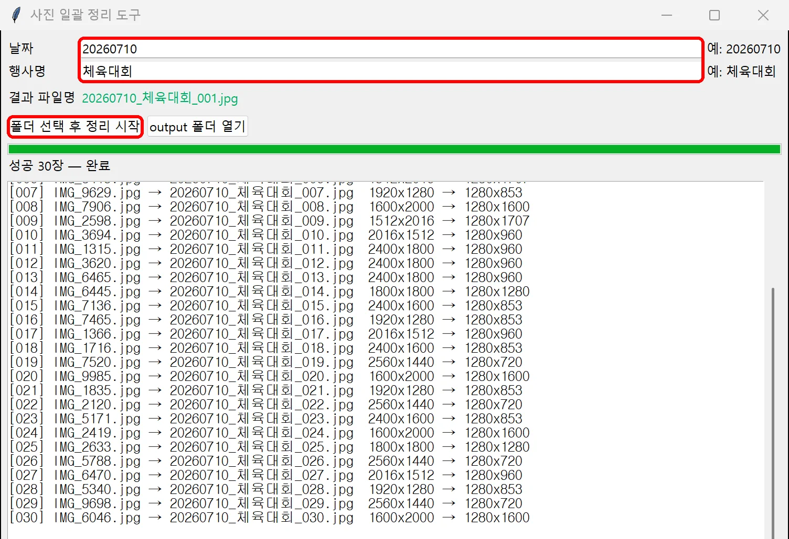
사진 일괄 정리 도구
날짜_행사명_번호로 이름 바꾸고 크기 줄이기
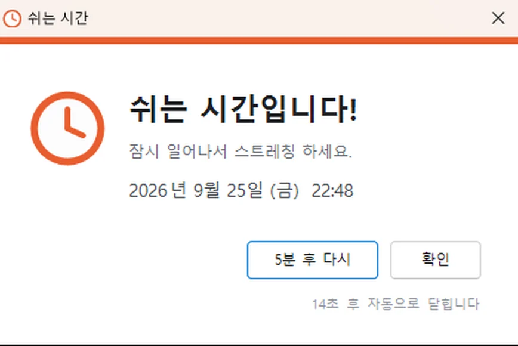
쉬는 시간 알림 타이머
트레이에 숨어 있다가 정해진 시각에 알림
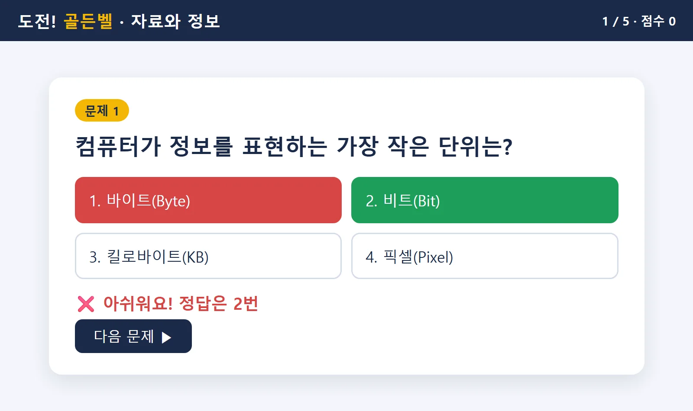
골든벨 퀴즈
링크·QR 하나로 학생 누구나 접속
강사가 실제로 Claude Code로 만든 결과입니다. 같은 프롬프트라도 여러분 화면은 조금씩 다르게 나와도 정상이에요.
0 시작 전 1분 점검 1차시 02–03분
사전 설치 안내문의 6가지가 모두 되어 있는지 확인합니다. 하나라도 안 되어 있으면 손을 들어 주세요.
바이브 코딩 = 내가 말하고, AI가 만들고, 내가 확인한다 1차시 03–06분
- 무엇을 만들지 정하고 말로 설명한다
- 실행해 보고 맞는지 눈으로 확인한다
- 고칠 점을 다시 말한다
- 요청을 코드로 바꾸고 파일을 만든다
- 필요한 라이브러리를 설치하고 실행한다
- 오류를 찾아 고친다
① 말하기 → ② 만들기 → ③ 확인하기 → ④ 고치기 — 이 4단계 루프가 오늘 100분 내내 반복됩니다.
좋은 프롬프트 3원칙
구체적으로
'예쁘게' 대신 '글자 크게, 4명씩 카드로'처럼 무엇을·어떻게를 딱 집어 말하기
한 번에 한 가지씩
기능 1개 = 프롬프트 1개. 잘 붙은 걸 확인한 뒤 다음 기능 요청하기
결과 보고 고치기
실행 화면을 보고 다시 요청. 스크린샷을 붙여 넣으면 더 정확해요
막히면 이 4문장이면 됩니다 1차시 06–07분
휴대폰으로 찍어 두거나, 오른쪽 [복사]를 눌러 바로 붙여 넣으세요.
Claude Code 준비 1차시 07–12분
① Claude 앱에서 [Code] 탭을 엽니다
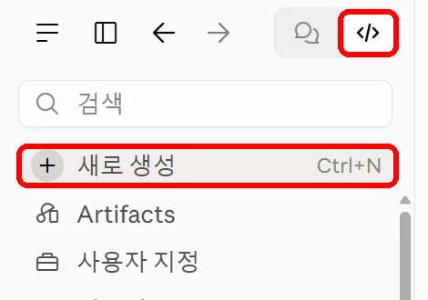
- 왼쪽 위 </> 버튼 클릭 → Code 탭말풍선 모양은 일반 채팅, </> 모양이 Claude Code
- [새로 생성] 클릭 (Ctrl+N)새 대화(세션)가 열립니다
- 앱이 바뀔 때마다 새로 생성상장 → 사진 → 타이머 → 퀴즈, 대화를 나눠 쓰면 헷갈리지 않아요
② 작업 폴더 C:\vibe 를 만들고 연결합니다
- 파일 탐색기 → C 드라이브 → 새 폴더 'vibe'최종 경로: C:\vibe
- Claude Code [새로 생성] 화면에서 폴더 선택입력창 근처의 폴더(📁) 버튼 → C:\vibe 선택
- 위쪽에 폴더 이름이 보이면 성공아래 그림처럼 상단에 작업 폴더가 표시됩니다
- '이 폴더를 신뢰할까요?' 창이 뜨면 → 신뢰Claude가 이 폴더 안에서 파일을 만들고 고칩니다
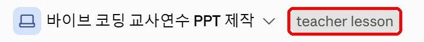
├ CLAUDE.md ← 공통 규칙
├ award ← 앱① 상장
├ photo ← 앱② 사진
├ timer ← 앱③ 타이머
└ quiz ← 웹앱 퀴즈
③ 입력창 한 줄에 필요한 버튼이 다 있습니다
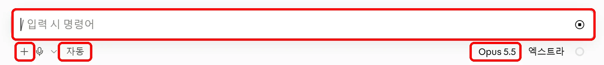
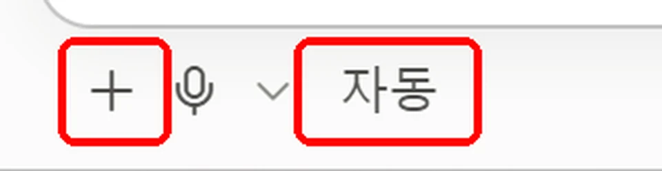
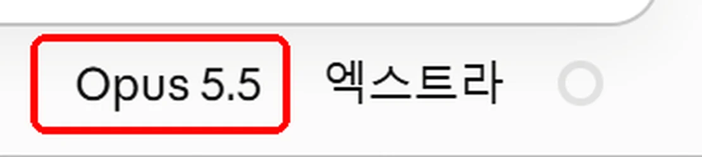
문장을 쓰고 Enter · 줄바꿈은 Shift+Enter
파일·이미지 첨부 · 스크린샷은 Ctrl+V
수정·실행 전에 물어볼지 정하기
기본값 그대로 두면 됩니다
④ 권한 모드: 얼마나 알아서 하게 할까?
입력창 왼쪽 아래 현재 모드 이름(예: 자동)을 누르면 아래 모드 중 하나를 고를 수 있습니다. ※ 메뉴 이름은 앱 버전에 따라 조금 다를 수 있어요.
윈도우 앱 3개, 말로 만들기
앱① 상장·수료증 일괄 생성기 · 앱② 사진 일괄 정리 도구 · 앱③ 쉬는 시간 알림 타이머
웹앱 vs 윈도우 앱, 무엇이 다를까? 1차시 12–14분
색이 칠해진 칸이 더 유리한 쪽입니다.
| 웹앱 (예: 골든벨 퀴즈 · 2차시) | 윈도우 앱 (예: 상장 · 사진 · 타이머 · 1차시) | |
|---|---|---|
| 학생이 쓰는 기기 | ● PC · 태블릿 · 휴대폰 · 크롬북 | Windows PC에서만 |
| 인터넷 | 공개 주소로 쓰려면 필요 | ● 없어도 실행 |
| 내 컴퓨터 파일 | 고른 파일만 · 폴더 일괄 처리 어려움 | ● 폴더·엑셀·사진을 한꺼번에 처리 |
| 학생 개인정보 | 공개 주소에 올리면 안 됨 | ● 내 PC 안에서만 처리 |
| 나눠 주기 | ● 링크 · QR 하나로 끝 | exe · 설치 파일 전달 |
| 고친 뒤 | ● 다시 올리면 모두에게 바로 반영 | 새 설치 파일을 다시 나눠 줘야 함 |
| 설치 · 보안 경고 | ● 설치 없음 | 백신·SmartScreen 경고가 뜰 수 있음 |
판단 한 줄 내 컴퓨터의 파일·개인정보를 다루면 → 윈도우 앱 | 여러 사람이 링크로 함께 쓰면 → 웹앱
먼저 규칙부터: CLAUDE.md 1차시 14–17분
CLAUDE.md는 '프로젝트 규칙 메모장'입니다. 한 번 적어 두면 새 대화를 열어도 Claude가 매번 읽고 지킵니다. C:\vibe 폴더를 연결한 상태에서 입력하세요.
C:\vibe 안에 award, photo, timer, quiz 폴더 4개를 만들어 줘. 그리고 C:\vibe에 CLAUDE.md 파일을 만들어서 아래 규칙을 적어 줘. 1. 파이썬은 Thonny에 들어 있는 python.exe를 찾아서 쓰고, 필요한 라이브러리도 그 파이썬에 설치할 것 2. 한글은 맑은 고딕(malgun.ttf)으로 써서 깨지지 않게 할 것 3. 결과물은 각 앱 폴더 안의 output 폴더에만 저장할 것 4. 엑셀·사진 같은 원본 파일은 절대 수정하지 말 것 5. 만든 뒤에는 직접 실행해서 오류가 없는지 확인할 것
▶ 이렇게 됩니다 C:\vibe에 CLAUDE.md와 폴더 4개가 생깁니다. 이후 모든 대화에서 Claude가 이 규칙을 먼저 읽고 따릅니다.
① 상장·수료증 일괄 생성기 1차시 17–35분
엑셀 명단 → 상장 30장, 4번의 대화로 완성합니다. 요령은 1명 미리보기 → 확인 → 전체 생성.
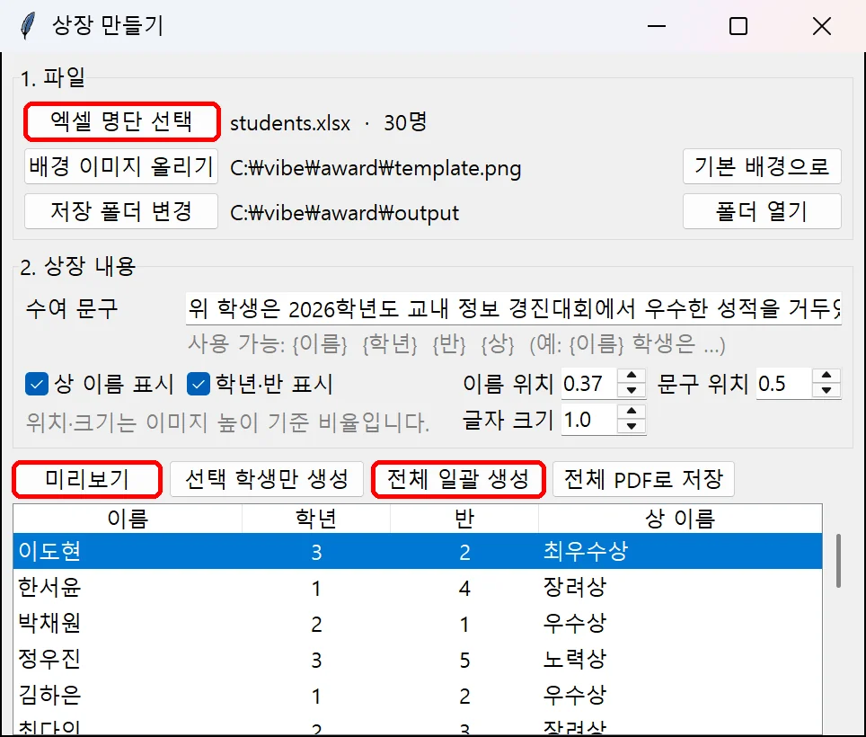
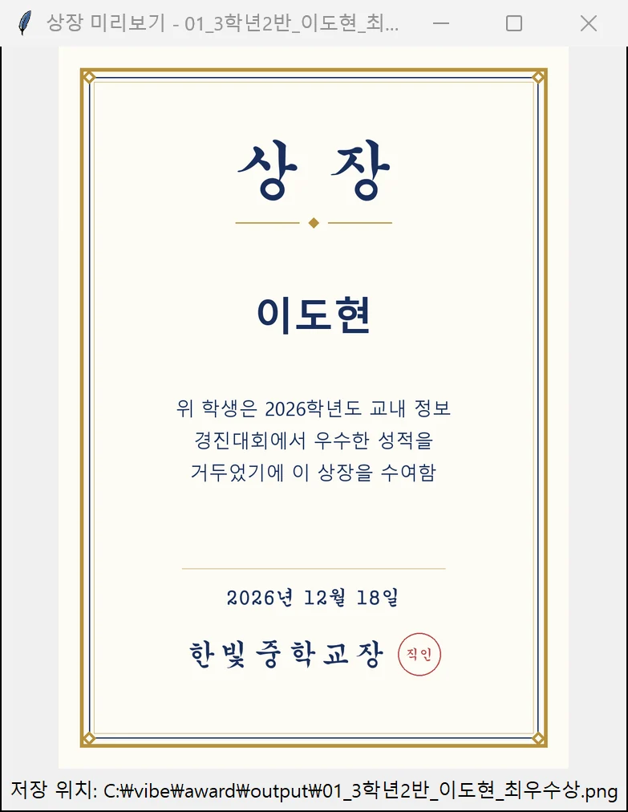
프롬프트 1/4 · 연습용 자료부터 AI에게 18–21분
실제 학생 명단은 쓰지 않습니다. 실습은 항상 가상 데이터로!
award 폴더에 상장 실습용 자료를 만들어 줘. 가상 학생 30명(이름, 학년, 반, 상 이름)이 들어 있는 students.xlsx 파일과, A4 세로 크기의 상장 배경 이미지 template.png(금색 테두리, 가운데는 비워 두기)를 만들어 줘.
▶ 이렇게 됩니다 award 폴더에 students.xlsx(가상 명단)와 template.png(상장 배경)가 생깁니다. 탐색기에서 열어 확인!
프롬프트 2/4 · 앱의 뼈대: 엑셀 명단을 표로 21–25분
award 폴더에 파이썬 tkinter로 '상장 만들기' 데스크톱 앱(app.py)을 만들어 줘. '엑셀 명단 선택' 버튼을 누르면 파일 선택 창이 열리고, 고른 엑셀의 명단(이름, 학년, 반, 상 이름)이 창 아래쪽에 표로 보이게 해 줘. 글자는 크게 해 줘.
▶ 이렇게 됩니다 app.py가 생기고, Claude가 직접 실행해 확인합니다. 창이 뜨면 students.xlsx를 골라 명단 30명이 보이는지 확인!
프롬프트 3/4 · 핵심 기능: 먼저 1명만 미리보기 25–28분
template.png 위에 학생 이름과 '위 학생은 2026학년도 교내 정보 경진대회에서 우수한 성적을 거두었기에 이 상장을 수여함' 문구를 얹어 상장을 만드는 기능을 추가해 줘. 먼저 '미리보기' 버튼을 누르면 표에서 고른 학생 1명의 상장만 창으로 보여 줘.
▶ 이렇게 됩니다 표에서 학생을 고르고 [미리보기]를 누르면 상장 1장이 창에 뜹니다. 한글·위치를 확인하세요.
프롬프트 4/4 · 확인했으면 30명 전원을 한 번에 28–30분
미리보기 확인했어. '전체 일괄 생성' 버튼을 추가해서 명단 30명 전원의 상장을 PNG와 PDF로 award\output 폴더에 만들어 줘. 파일 이름은 '상장_이름.png'처럼 해 줘.
▶ 이렇게 됩니다 award\output 폴더에 상장 30장(PNG)과 PDF가 생깁니다. 원본 엑셀·배경은 그대로!
Thonny에서 app.py를 열고 ▶ 실행 30–32분
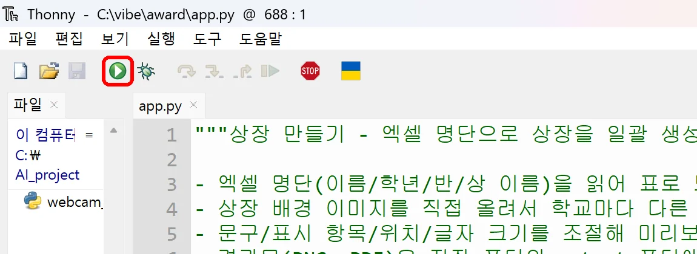
- Thonny 실행시작 메뉴에서 Thonny 검색
- 파일 > 열기C:\vibe\award\app.py 선택
- 초록 ▶ 버튼 (F5)잠시 뒤 '상장 만들기' 창이 뜹니다
- 또는 Claude에게"app.py 실행해 줘"라고 말하기
output 폴더에 상장이 만들어졌나요? 32–33분
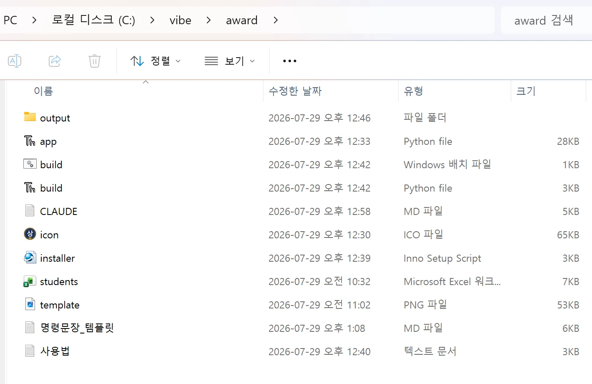
- output에 30장
- PDF 1개
- 원본 엑셀·배경 그대로
마음에 안 들면 스크린샷을 붙여 넣고 말하세요 33–34분
(Win + Shift + S로 상장 부분을 캡처 → 입력창에 Ctrl + V) 이 상장에서 이름이 너무 작고 왼쪽으로 치우쳐 있어. 이름 글자를 1.5배 키우고 가로 가운데에 오게 해 줘. 다른 부분은 그대로 둬.
▶ 이렇게 됩니다 Claude가 그림을 보고 위치·크기를 고칩니다. 다시 [미리보기]로 확인 → 괜찮으면 [전체 일괄 생성].
오류가 나면? 읽지 말고 복사해서 붙여 넣기 34–35분
app.py를 실행했더니 아래 오류가 났어. 원인을 찾아서 고쳐 줘. 다른 기능은 바꾸지 마. (오류 메시지 전체를 복사해서 붙여 넣기)
① Claude에게: "Thonny 파이썬에 openpyxl, pillow를 설치해 줘"
② Thonny 도구 > 패키지 관리 → 이름 입력 → PyPI로 찾기 → 설치
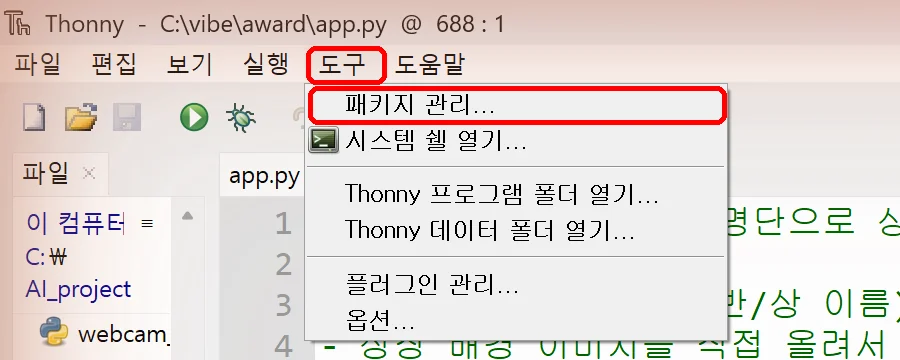
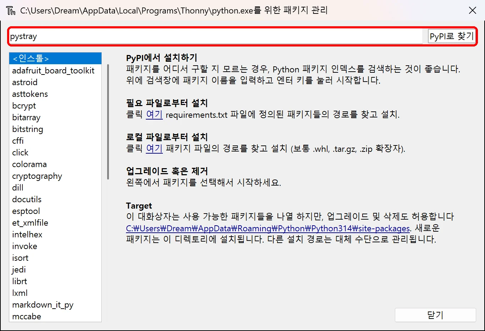
② 사진 일괄 정리 도구 1차시 35–44분
행사 사진을 '날짜_행사명_번호'로 이름 바꾸고 크기를 줄입니다. [새로 생성]으로 새 대화를 열고 시작하세요(폴더는 C:\vibe 그대로).
프롬프트 5 · 연습용 사진도 AI가 만들어 줍니다 36–38분
photo 폴더 안의 sample_photos 폴더에 연습용 가상 사진 30장을 만들어 줘. 사람 얼굴 없이 풍경·도형 그림으로, 크기는 제각각(가로 1600~2600픽셀)으로 해 줘.
▶ 이렇게 됩니다 photo\sample_photos 폴더에 IMG_xxxx.jpg 같은 이름의 사진 30장이 생깁니다.
프롬프트 6 · 사진 정리 도구 만들기 38–42분
photo 폴더에 tkinter로 '사진 일괄 정리 도구'를 만들어 줘. 날짜와 행사명을 입력하고 폴더를 고르면, 그 안의 사진을 '날짜_행사명_번호.jpg'(예: 20260710_체육대회_001.jpg)로 이름을 바꾸고 가로 1280픽셀로 줄여서 output 폴더에 저장해 줘. 원본 사진은 절대 건드리지 마.
▶ 이렇게 됩니다 창에 날짜·행사명을 넣고 sample_photos 폴더를 고르면 output에 새 이름의 사진 30장이 생깁니다.
프롬프트 7 · (도전) 미리보기 안전장치 42–44분
실제로 바꾸기 전에 '원래 파일명 → 새 파일명' 목록을 먼저 보여 주고, 내가 [실행] 버튼을 눌러야 변환되도록 미리보기 기능을 추가해 줘.
왜 미리보기? 파일 이름을 한꺼번에 바꾸는 앱은 실수하면 되돌리기 어렵습니다. 확인 후 실행!
③ 쉬는 시간 알림 타이머 · 도전 1차시 44–48분
트레이에 숨어 있다가 딱 맞춰 알려 주는 앱. 새 대화에서 시작하고, 시간 여유가 있는 분만 도전합니다.
timer 폴더에 '쉬는 시간 알림' 앱을 만들어 줘. 평소에는 창 없이 작업 표시줄 트레이 아이콘으로 숨어 있다가, 정해 둔 시각(예: 매시 50분)이 되면 '쉬는 시간입니다!' 알림창을 맨 앞에 띄우고 알림음을 울려 줘. 트레이 아이콘을 우클릭하면 시각 설정, 지금 알림 테스트, 종료를 할 수 있게 해 줘.
▶ 이렇게 됩니다 실행해도 창이 안 뜨는 게 정상! 작업 표시줄 오른쪽 ^ 안의 트레이 아이콘을 우클릭해 보세요.
테스트: 다음 정각까지 기다리지 말고 1~2분 뒤로
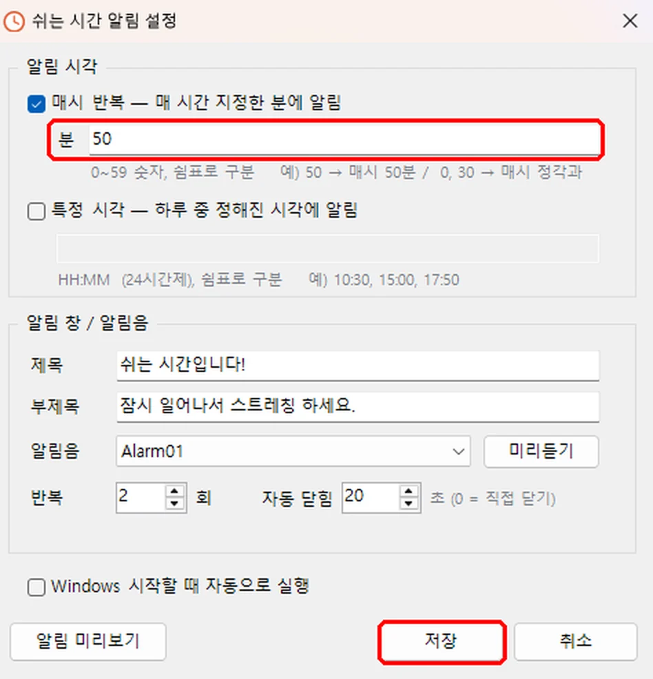
- 트레이 아이콘 우클릭 → 알림 시각 설정
- 지금 +1~2분으로 설정 → 저장
- 알림창·소리 확인 → 종료는 트레이 우클릭응답이 없으면 작업 관리자에서 끝내기
1차시 완주 체크 1차시 48–50분
체크 상태는 이 브라우저에만 저장됩니다.
만든 앱을 나눠 주기
배포① 윈도우 앱 → 설치 파일 · 웹앱 골든벨 퀴즈 · 배포② GitHub에 올리고 주소로 공개
배포① app.py → exe → setup.exe 2차시 00–12분
app.py
Thonny ▶ 로 실행
파이썬이 있어야 함
상장만들기.exe
더블클릭으로 실행
파이썬 없어도 OK
setup.exe
설치·바로가기·제거
동료에게 전달
프롬프트 9 · exe 파일 만들기 (PyInstaller) 02–06분
award의 상장 만들기 앱을 PyInstaller로 exe 파일 하나로 만들어 줘. 콘솔 창은 뜨지 않게 하고, template.png도 exe 안에 넣어 줘. 결과물은 exe 옆 output 폴더에 저장되게 하고, 빌드한 exe를 직접 실행해서 확인해 줘.
▶ 이렇게 됩니다 award 안의 dist(또는 output) 폴더에 상장만들기.exe가 생깁니다. 더블클릭으로 실행!
프롬프트 10 · 설치 파일 만들기 (Inno Setup) 06–10분
이 exe로 Inno Setup 설치 파일(setup.exe)도 만들어 줘. 한국어 설치 화면, 관리자 권한 없이 설치, 바탕화면·시작 메뉴 바로가기, 제어판에서 제거 가능하게 해 줘. Inno Setup(ISCC.exe)은 %LOCALAPPDATA%\Programs\Inno Setup 6 또는 C:\Program Files (x86)\Inno Setup 6에 있어. 확인 없이 끝까지 진행해 줘.
▶ 이렇게 됩니다 '상장만들기_설치.exe' 같은 설치 파일이 생깁니다. USB·메신저로 동료에게 전달할 수 있어요.
설치 파일을 실행하면 이렇게 보입니다 10–12분
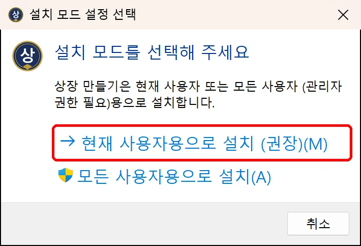
- 설치 파일 더블클릭
- [현재 사용자용으로 설치 (권장)]관리자 권한이 없어도 설치됩니다
- 다음 → 설치 → 마침바탕화면에 '상장 만들기' 아이콘 생성
웹앱 골든벨 퀴즈 2차시 12–20분
이번엔 링크 하나로 나눠 주는 웹앱입니다. index.html 파일 하나로 만들면 더블클릭 실행 · 복사·공유 · GitHub 공개가 모두 쉬워집니다.
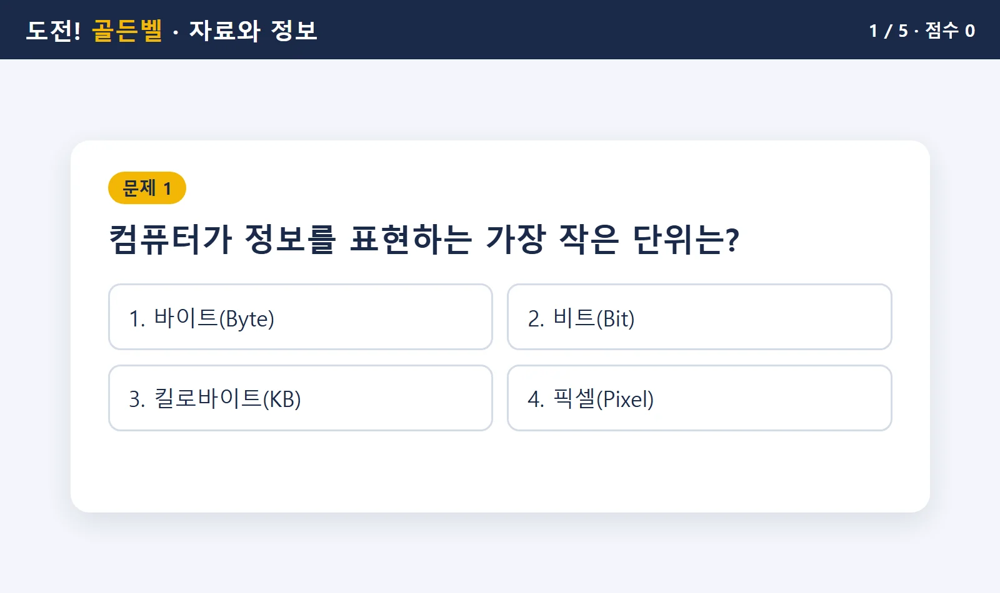
✍ 내 정보 입력 — 아래 프롬프트의 [ ] 칸이 자동으로 바뀝니다
입력한 내용은 이 브라우저에만 저장되고, 어디에도 전송되지 않습니다.
입력하면 QR이
나타나요
프롬프트 11 · 골든벨 퀴즈 웹앱 만들기 13–17분
[새로 생성]으로 새 대화 → 아래 문장 입력
quiz 폴더에 골든벨 퀴즈 웹앱을 index.html 파일 하나로 만들어 줘(CSS·JS도 그 안에). 중학교 정보 '자료와 정보' 단원 4지선다 5문제를 한 문제씩 크게 보여 주고, 답을 고르면 정답은 초록색·오답은 빨간색으로 바로 알려 줘. 마지막에는 총점과 격려 문구를 보여 줘. 교실 TV에 띄울 거라 글자를 크게 해 줘.
▶ 이렇게 됩니다 quiz\index.html이 생깁니다. 탐색기에서 더블클릭하면 브라우저로 열려요.
프롬프트 12 · 내 교과 문제로 바꿔 보기 17–20분
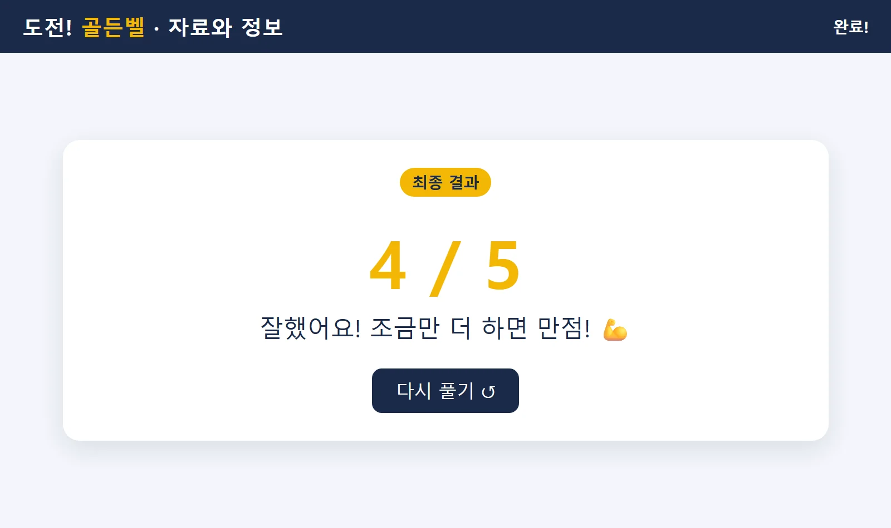
문제를 내 교과인 [과목·단원] 내용으로 바꿔 줘. 문제 수는 10개로 늘리고, 나머지 디자인과 기능은 그대로 둬.
배포② GitHub에 올리고 주소로 공개 2차시 20–40분
1/5 · GitHub에 빈 저장소(quiz) 만들기 20–23분
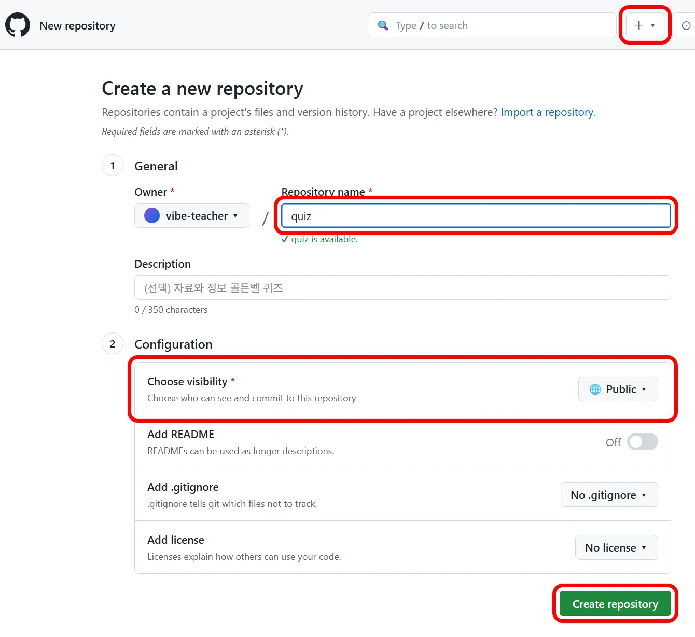
- github.com 로그인가입했던 방법(Google 등) 그대로
- 오른쪽 위 ＋ → New repository
- Repository name: quizPublic 선택 · README는 끄기
- [Create repository] 클릭빈 저장소가 만들어집니다
2/5 · 저장소 주소를 복사합니다 23–24분
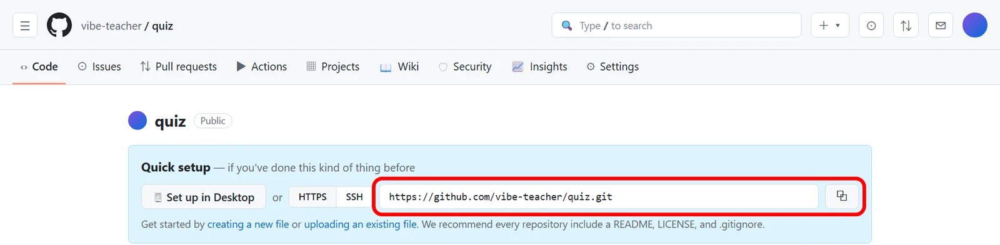
복사한 주소 형식: https://github.com/내아이디/quiz.git — 이 주소를 다음 프롬프트에 넣습니다(위 '내 정보'에 아이디를 넣었다면 자동으로 들어가 있어요). 화면 아래 명령어는 몰라도 됩니다 — Claude가 대신 해요!
3/5 · Claude Code에게 올려 달라고 말하기 24–28분
quiz 폴더를 git 저장소로 만들고 첫 커밋을 해 줘. 그다음 https://github.com/[내 아이디]/quiz.git 에 main 브랜치로 올려(push) 줘. git 사용자 정보가 없으면 이름은 [내 이름], 이메일은 [GitHub 가입 이메일]로 설정해 줘.
▶ 이렇게 됩니다 처음 한 번은 GitHub 로그인 창이 뜹니다(아래). 끝나면 GitHub 저장소에 index.html이 보여요.
처음 올릴 때 한 번, GitHub 로그인 창이 뜹니다 28–31분
- 'Connect to GitHub' 창 → [Sign in with your browser]작업 표시줄에 숨어 있을 수 있어요
- 브라우저에서 로그인 → [Authorize git-ecosystem]Git Credential Manager 사용 허락
- 'Authentication Succeeded' → 브라우저 창 닫기Claude가 push를 이어서 끝냅니다
4/5 · Pages 켜기: Settings → Pages → main → Save 31–34분
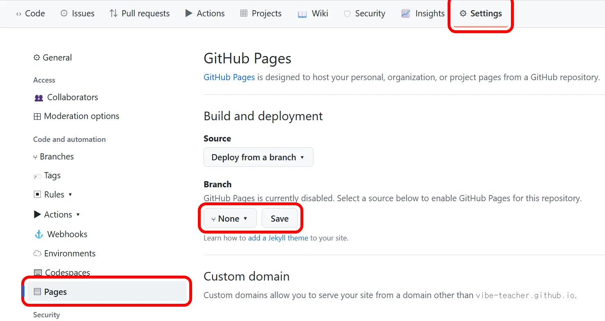
- 위쪽 탭 Settings
- 왼쪽 메뉴 Pages
- Branch: None → main폴더는 / (root)
- [Save] 클릭1~2분 기다리기
5/5 · 주소가 생기면 휴대폰으로 접속! 34–38분
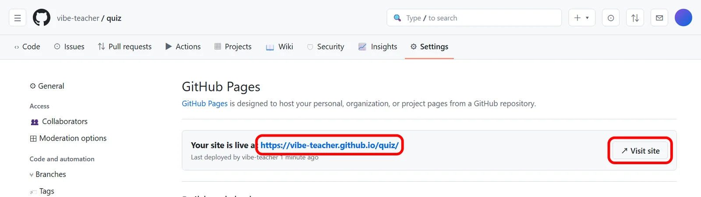
내 주소: https://내아이디.github.io/quiz/ · 404가 나오면 1~2분 더 기다린 뒤 새로고침.
내 퀴즈 주소로 접속하는 QR코드 이미지를 quiz 폴더에 qr.png로 만들어 줘. 주소: https://[내 아이디].github.io/quiz/
수정 → 다시 올리기, 이것만 반복하면 됩니다 38–40분
예) 프롬프트 12 · 내 교과 문제로 바꾸기
아래 프롬프트 15 · 한 문장이면 끝
같은 주소 · 같은 QR · 내용만 바뀜
방금 고친 내용을 커밋하고 GitHub에 다시 올려 줘.
2차시 완주 체크 — 마지막은 휴대폰으로 확인 2차시 40–42분
이럴 땐 이렇게 말하세요 2차시 42–45분
| 증상 | 이렇게 말하기 |
|---|---|
| 파이썬을 못 찾음 / Store가 열림 | "Thonny에 들어 있는 python.exe를 찾아서 써 줘" |
| Thonny ▶ 에서 ModuleNotFoundError | "Thonny 파이썬에 ○○ 라이브러리를 설치해 줘" |
| 한글이 □□□ 로 나옴 | "맑은 고딕(malgun.ttf)으로 그려 줘" |
| exe 빌드 중 PermissionError | "실행 중인 앱을 닫고 다시 빌드해 줘" |
| 설치 파일 만들 때 되묻거나 멈춤 | "Inno Setup 경로는 ○○야. 확인 없이 진행해" |
| push 실패 (인증·403) | "GitHub 인증을 다시 해서 push해 줘" |
| Pages 주소가 404 | 1~2분 뒤 새로고침 · Pages에서 main 저장 확인 |
| 응답이 느림 / 사용 한도 | 요청을 작게 쪼개기 · 한 번에 한 가지씩 |
AI로 학교 앱을 만들 때 안전 수칙 2차시 45–47분
실습은 가상 데이터로
실제 학생 명단·사진·성적은 연수 PC에 복사하지 않기
개인정보는 내 컴퓨터 안에서
명단·사진 처리는 윈도우 앱으로 로컬에서 — 웹에 올리지 않기
Public 저장소 = 전 세계 공개
GitHub에는 학생 이름·연락처·성적이 들어간 파일 올리지 않기
원본 보호 · 확인 후 실행
결과는 output 폴더에 · 파일을 바꾸는 앱엔 미리보기 안전장치
나는 이제 '말로 앱을 만드는' 교사입니다
윈도우 앱 3개
상장 · 사진 · 타이머
설치 파일
exe → setup.exe
웹앱 1개
골든벨 퀴즈
GitHub 공개
주소 · QR로 공유
다음 도전 — 내 업무의 반복 작업 하나를 앱으로
기획 6칸을 문장으로 이어 붙이면 그대로 첫 프롬프트가 됩니다.